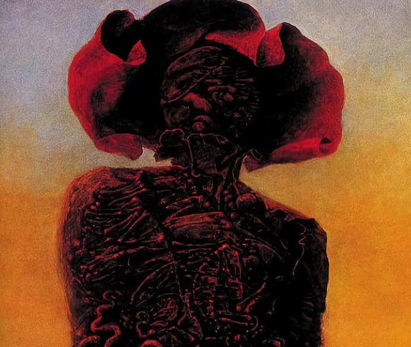
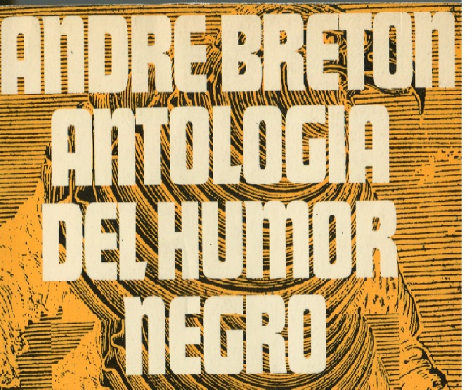

Disciplinas
Artes Plásticas
Siendo los artistas mas conocidos Salvador Dalí, Max Ernst, Joan Miró Remedios Vargas y Leonora Carrington. Presentaron su interés por el uso de distintos materiales y técnicas como detonador creativo, varias de sus obras generan un abanico desde pinturas, ilustraciones y esculturas. Principalmente se rescata el uso de materiales clásicos como oleos con tabla y lienzo u otras técnicas novedosas como Collages e incrustaciones con cerámicos y metales.
Ver videoLiteratura
La literatura surrealista busca la renovación de la composición textual usando de referencia técnicas como el cadáver exquisito. En la literatura, busca que el lector asocie palabras e ideas aparentemente inconexas hasta encontrar un sentido, ya sea consciente o inconscientemente. Entre las obras mas conocidas están Antología del humor negro (1940) donde reúne escritos de distintos autores surrealistas y Nadja (1928) ambas de André Breton.
Ver videoFotografía

En si durante el inicio del siglo la fotografía comenzaba a verse como una disciplina artística no únicamente de presentación pero de creación. Los mayores exponentes fueron Man Ray, Paul Nougé, Philippe Halsman y László Moholy-Nagy. Dentro de las técnicas de fotografía y fotomontaje se destaca el uso de rayogramas; composiciones abstractas donde situaba objetos por contacto en papel sensible a la luz, y sus solarizaciones; imágenes sobre un material sensible a la luz que invierten su tono de un modo total o parcial.
Ver videoCine

El cine surrealista utiliza imágenes inconexas, elementos sin relación alguna y montajes que desafiaban la realidad haciendo referencia a información albergada en el subconsciente. Los principales exponentes son el director Luis Buñuel con Un Chien Andalou (1929), The Seashell and the Clergyman (1928), dirigida por Germaine Dulac y títulos como Eraserhead (1977) de Lynch y Paprika (2006) de Satoshi Kon
Ver video